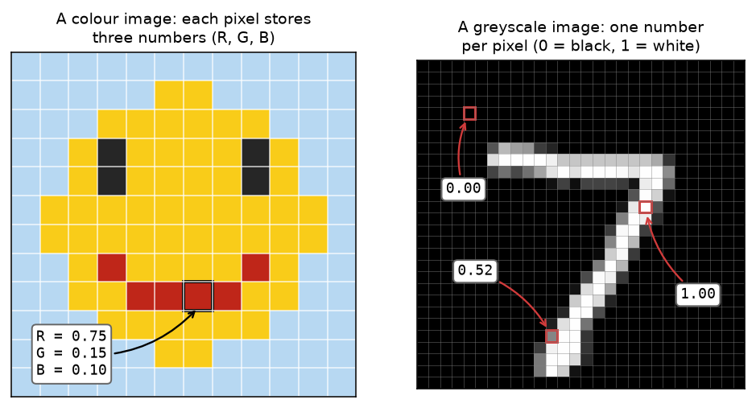
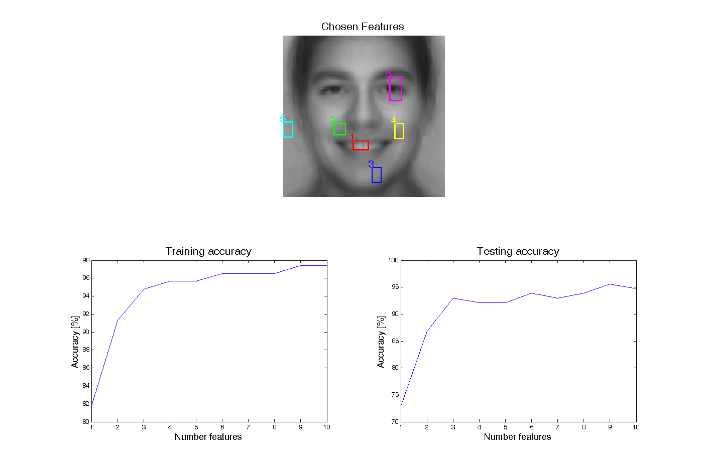

Classifying Facial Expressions
How can we teach a computer to see? In this exercise, we will take a small step towards this ambitious goal, by building a model that can identify whether someone is smiling from an image.
In a computer, an image is usually stored using a fixed rectangular grid of pixels, where each grid element stores three ‘RGB’ values, which measure how much red, green and blue each pixel contains. For greyscale images, storing images is simpler, each grid element simply measures how bright the pixel is, e.g. 0 for black, and 1 for white.

In this exercise, we will solely work with greyscale images that have a fixed width of 128 pixels and a height of 128 pixels. We will use the notation X to refer to the grid of pixel values.
Note: In mathematical notation, we often write X \in \mathbb{R}^{128 \times 128} to indicate that X is a 128×128 grid (matrix) of real numbers.
Objective: Build a system that classifies face images as either smiling or neutral. The goal is to build a classifier that takes the image matrix X and produces an output y = 1 (‘Yes’) if the image contains a person smiling, and y = 0 (‘No’) otherwise.
Data
For this exercise, we will use face images collected from three public-domain face databases: the AR Face Database (Aleix Martinez, Purdue), the Yale database, and the Stirling database. To develop and evaluate our model, the images have been randomly divided into a training set (115 images) and a test set (114 images). The faces were prepared by manually selecting four points (eyes and mouth corners) and estimating a similarity transformation to warp the images onto a mean image.
The training dataset is shown below with the manually-annotated facial expressions overlaid. Do you agree with the annotations?
Step 1 — Feature selection
It’s first useful to think about the features we rely on to recognise a smile as humans. In the examples above, common features of smiling include:
- Lips curved upwards.
- Raised eyebrows.
- Indented cheeks.
- Teeth on show.
These features are clearer in the images below, which show the average neutral (left) and average smiling (right) images. Each pixel in these images is an average calculated over the training set. For example, the bottom-left pixel of the average neutral image is calculated by taking the average over all bottom-left pixels from images containing neutral expressions.
It is easy for us to look at an image and identify features such as whether teeth are on show, but how can we calculate this mathematically from a computer image?
We will use a simple method to calculate features of an image that are correlated with smiling. To do this, we will select different rectangles within the image, and use the average pixel value within each rectangle as a feature to our model. (Later in the practical we will use more than 2 features to improve our model.)
Task
Select a set of rectangles for the features: each rectangle should identify a face region which differs between the two classes. The feature computed from each rectangle is its mean grey level.
- Choose a feature slot: 1–2, below.
- Click and drag on either face to draw a rectangle.
- Repeat for the second slot. You can change an existing rectangle by re-drawing with the same feature slot selected.
Step 2 — Feature visualisation
By selecting rectangles and calculating the average pixel value in each rectangle, we have transformed each image into a set of features. We will use the notation z_1 and z_2 to refer to the two feature values calculated from the pixels within the two rectangles, and \mathbf{z} = [z_1, z_2] to refer to the collection of feature values.
In machine learning, a collection of feature values \mathbf{z} is commonly known as a feature vector.
Why is this useful? The original greyscale image X consisted of 128×128=16,384 pixels. From these 16,384 numbers we want to produce a single 1/0 output (Yes or No) that tells us whether the image contains a smiling face. By calculating a small number of features, we have dramatically simplified this problem. Transforming each image X into N = 2 features is particularly helpful: we can visualise the entire training set of images on a scatter plot, where each image is a single point (z_1, z_2) in a 2-D plot, coloured by whether it is smiling or neutral:
Go back to Step 1 and watch how the separation changes as you vary the features. Which rectangles are most helpful to separate neutral and smiling expressions? Are any surprising?
Further reading: dimensionality reduction and overfitting
The number of values needed to describe an input is called its dimensionality: the dimensionality of the image X is 16,384, while the feature vector \mathbf{z} has dimensionality N = 2. In machine learning, if the dimensionality of the input is much larger than the number of labelled examples (we have only 115 training images!), then a model trained on the data is often at risk of overfitting: performing well on the training data but poorly on unseen test data. By transforming the 16,384-dimensional image into a small set of features \mathbf{z}, we greatly reduce this risk. This process of using human knowledge to perform dimensionality reduction is known as feature engineering in the ML literature.
To see why models with many parameters can overfit, it is easiest to think about polynomials. Any 3 datapoints (x, y) can be fitted exactly by a quadratic, and in general any N points can be fitted exactly by a polynomial of degree N - 1 — the curve simply memorises the data, wiggling through every point, rather than capturing the underlying trend. A classifier whose input has more dimensions than there are training examples can “memorise” the training set in the same way.
Step 3 — Fit a classifier by hand
How can a computer decide which class a point belongs to? We will use a simple linear classifier to do this. With two inputs, z_1 and z_2, a linear classifier works by defining a straight line through feature space: points on one side are classified as smiling, points on the other side as neutral. To build the classifier, we choose two weights w_1, w_2 and a bias b, and for each point compute the number w_1 z_1 + w_2 z_2 + b. The classifier’s output \hat{y} depends on the sign of this number:
Here we use the notation \hat{y} for the classifier output, which is an estimate of the ground-truth label y. The line drawn in the plot below is where this expression is exactly zero:
This line is called the decision boundary, because it is where the classification flips from one class to the other. On one side of the line the expression is positive (the red arrow), on the other side it is negative (the blue arrow).
Task
Move the sliders to change w_1, w_2 and b, and try to find the line that classifies as much of the training set correctly as possible.
- How does each slider change the line?
- What is the best accuracy you can reach by hand?
What you now have is a simple mathematical formula for automatically identifying smiling faces from images, albeit a much less accurate one than you have in your own brain!
Step 4 — Add a third feature
How can we make our classifier better? Two features are rarely enough. Let’s try adding another below, choose slot 3 and draw a third rectangle:
With N = 3 features, every image can be visualised as a point in a 3-D feature space, and the decision boundary of a linear classifier is no longer a line but a plane. Rotate the plot below to see the structure of the data. Can you tweak the parameters of the plane to separate smiling and neutral images?
Try to place the plane by hand, as you did with the line — now there are four numbers to tune:
With two features, there were three parameters that we needed to tune: w_1, w_2 and a bias b. With three features, there are now four numbers to tune (w_1, w_2, w_3, b). As we add more and more parameters to our model, it becomes increasingly difficult to manually find the optimal parameters of our classifier. Models like ChatGPT have trillions of parameters. We need a way for the computer to find the best weights automatically.
Step 5 — Train the classifier with gradient descent
In general, as we add more features, the equation that describes the decision boundary of a linear classifier is given by:
where N is the number of features. This can be written in vector notation as \mathbf{w}^\top \mathbf{z} = 0, where \mathbf{w} = [w_1, \ldots, w_N, b] is a vector of the parameters and \mathbf{z} = [z_1, \ldots, z_N, 1] is the feature vector with a 1 appended. In machine learning, these parameters are often known as the model ‘weights’, hence the letter \mathbf{w} is often used.
To automatically find better parameters, we first need a metric that measures how ‘good’ a given set of weights are. To do this, we define a loss function E. In this exercise, our loss function is the sum of squared differences between the classifier’s outputs \hat{y} and the true 0/1 labels y over all examples in our training set \mathcal{D}. We can write this mathematically as:
For a perfect classifier, y = \hat{y} for all examples, and E will be equal to zero. This is just one of many different loss functions used in machine learning. Can you think of any alternatives that might also work?
Now that we have a metric, next we need a method to optimise our weights \mathbf{w}. A very popular method to do this is known as gradient descent. Every large language model, including ChatGPT, is trained using a variant of this method.
How does it work? Much like our feature vector \mathbf{z}, we can also think of the weights \mathbf{w} as representing a point in an N-dimensional space. From an initial set of weights, gradient descent uses differentiation to calculate the direction in that space that \mathbf{w} should move in to decrease the loss function E. We then take a small step in that direction.
Writing \mathbf{w}_t for the weights after t updates, the equation for one step of gradient descent is:
Reading the equation piece by piece:
- \mathbf{w}_{t+1} are the updated weights after step t + 1.
- \mathbf{w}_t are the current weights at step t.
- \eta, is the learning rate, which determines how big each update is: too small and training needs many iterations; too large and the weights and never settle.
- \nabla \mathbf{w}_t is the weight update calculated by differentiating the loss E with respect to the weights \mathbf{w}.
Training starts from an initial set of weights. For example, with all weights set to 1: \mathbf{w}_0 = [1, \ldots, 1]. We then iteratively update the weights by taking a fixed number of steps using a fixed learning rate.
Press Train and watch the error fall as the classifier is fitted. How does the final accuracy compare with your hand-tuned plane from Step 4? What happens if you change the learning rate \eta? (Try making it 10x smaller or larger)
Step 6 — Test the classifier
The unseen test images are classified with the trained model. Rows of the confusion matrix are the desired class; the diagonal counts correct classifications. For each image, the predicted labels are shown above each image and are ✓ green when correct and ✗ red when wrong. Examine the misclassified images and try to understand why your features missed them.
Step 7 — Use more features
Now repeat the steps above using more features. Draw new rectangles in slots 4–8 and try to improve the classification performance. (Note: we have only used average pixel values within each rectangle, what other types of features might be suitable for this task?)
Once we have more than N = 3 features, visualisation becomes more tricky: we cannot simultaneously plot all the feature values at once. Instead, we can plot every pair of features z_i against z_j, this gives us 2-D views of the N-dimensional feature space:
Retrain the classifier with all of your features, and check how the results in Step 6 change:
Hints
Using 3 rectangles around the mouth area works quite well, e.g. as a white-teeth detector, plus a skin region to calibrate against. The figure shows a solution found for up to 6 rectangles using a greedy search (thanks to Patrick Buehler) — the reference rectangles in Step 1 are a similar machine-found solution.

For other feature types: possibilities are measuring the shape of the mouth using edge data, or using all of the mouth/eye regions and PCA.